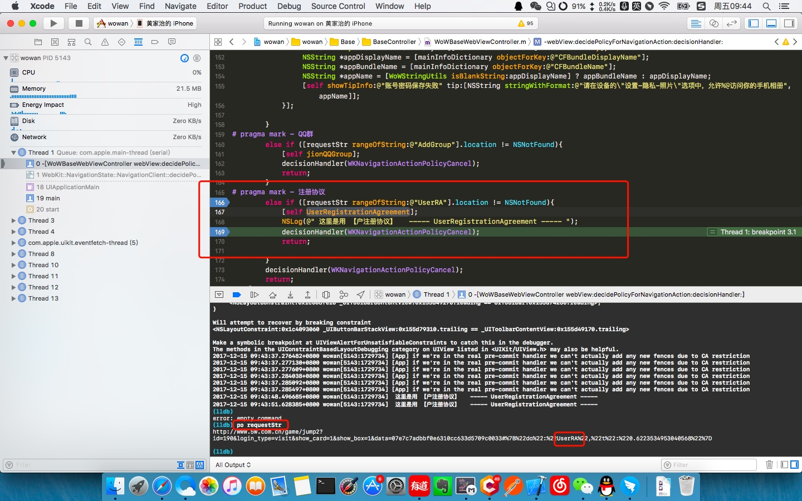

字符串拼接
- 方法一：
- 错误的写法：string = [NSString initWithFormat:@"%@,%@", string1, string2 ];
- 正确的写法：string = [[NSString alloc] initWithFormat:@"%@,%@", string1, string2 ];
- 还有一种方法：NSString *string = [NSString stringWithFormat: @"%@%@", string1, string2];
- 方法二：
string = [string1 stringByAppendingString:string2];
- 方法三：
string = [string stringByAppendingFormat:@"%@,%@",string1, string2];
IDFA 的获取方法
之前用的是 IDFV
IDFA
NSString *idfa = [[[ASIdentifierManager sharedManager] advertisingIdentifier] UUIDString];
与后台的联调
- 首先是方法名的定义 "jionGroup"、"UserRA" 等
- 其次在需要交互的地方写好,调用方法就 OK
#pragma mark - 在发送请求之前，决定是否跳转
- (void)webView:(WKWebView *)webView decidePolicyForNavigationAction:(WKNavigationAction *)navigationAction decisionHandler:(void (^)(WKNavigationActionPolicy))decisionHandler
- else if ([requestStr rangeOfString:@"AddGroup"].location != NSNotFound) // 这里写 AddGroup 的方法
- else if ([requestStr rangeOfString:@"UserRA"].location != NSNotFound) // 这里写 UserRA 的方法
调试
- 断点是最常见的
- 断点停止地方如果想打印数据
- LLDB 调试
控制台 po requestStr
